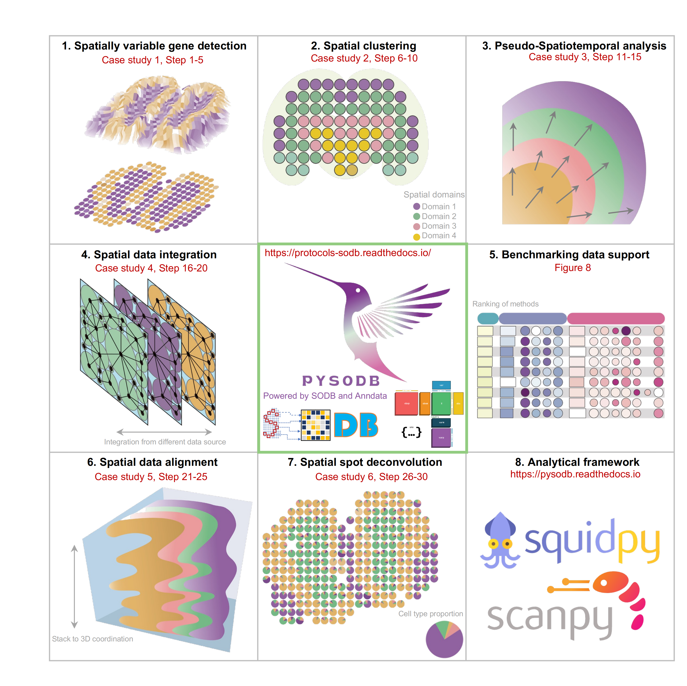

PROTOCOLS_PYSODB
Tutorial:
Alignment
Deconvolution
Integration
Pseudo-spatiotemporal analysis
SOView
Spatial clustering
Spatially variable gene
PROTOCOLS_PYSODB
Protocols - Streamline development of spatial omics analysis tools using SODB!
查看页面源码
Protocols - Streamline development of spatial omics analysis tools using SODB!

Tutorial:
Alignment
Installation
Reproducibility with original data
Application with new data
Deconvolution
Installation
Reproducibility with original data
Application with new data
Integration
Installation
Reproducibility with original data
Application with new data
Pseudo-spatiotemporal analysis
Installation
Reproducibility with original data (DLPFC)
Reproducibility with original data (seqFISH)
Application with new data
SOView
Installation
10x
Biancalani2021Deep
Dataset5_MS_process
Fu2021Unsupervised
lohoff2021integration
maynard2021trans(151507)
maynard2021trans(151671)
maynard2021trans(151673)
Merfish_Visp
moncada2020integrating
stahl2016visualization
stickels2020highly
Sun2021Integrating
Wang2018Three_1k
Wang2018three
Spatial clustering
Installation
Reproducibility with original data
Application with new data
Spatially variable gene
Installation
Reproducibility with original data
Application with new data
{kind=link}